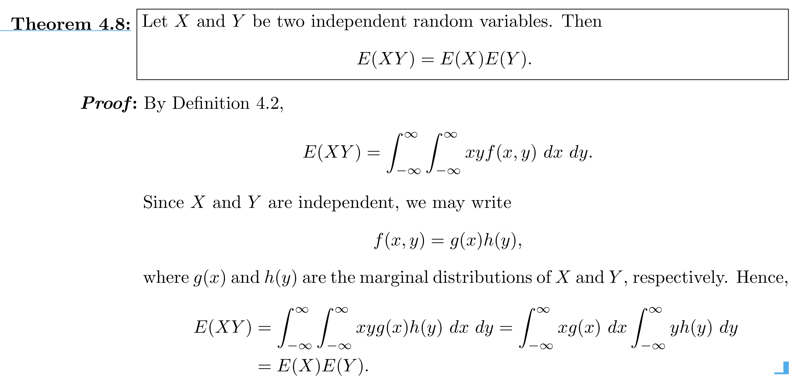
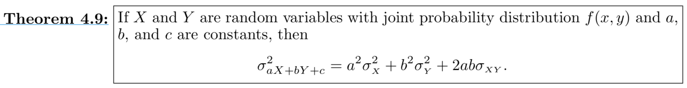

Recall the definitions for the expected value of a discrete random variable $X$ and a continuous random variable $Y$, respectively:
Recall from Calculus the linearity properties of summations and integrals:
Unsurprisingly and easily proved (see textbook or try it yourself) are the following theorems:
A little more interesting is Theorem 4.8:
 Note: not a linear combination! The caveat is that $X$ and $Y$ must be independent.Recall the definition of the variance of a random variable $X$:
$Var(X) = E[(X - E(X))^2]$
Theorem: $Var(aX + b) = a^2Var(X)$
Proof: Let $\mu = E[aX+b]$, then $Var(aX + b) = E[((aX+b)-\mu)^2]$
$=E[(aX+b)^2 - 2(aX+b)\mu + \mu^2]$
$=E[(aX+b)^2] - 2\mu^2 + \mu^2$
$=a^2E[X^2]+2abE[X]+b^2 - (aE[X]- b)^2$
$=a^2E[X^2]+2abE[X]+b^2 - (a^2(E[X])^2 -2abE[X] +b^2)$
$=a^2Var(X)$
Similarly, we can prove the more general theorem:
which your textbook details, but I recommend as an exercise to perform this proof on your own.
Recall that $cov(X,Y) = Var(XY) = E(XY) - E(X)E(Y)$
Now theorem 4.8 states that if $X$ and $Y$ are independent, then $E(XY) = E(X)E(Y)$
As we had suspected, if $X$ and $Y$ are independent, then their covariance is 0.
And we get the more general corollary to theorem 4.9:
If $X_1, X_2, \dots, X_n$ are independent r.v.'s, then $Var(a_1X_1 + a_2X_2 + \dots +a_nX_n) =$ $a_1^2Var(X_1) + a_2^2Var(X_2) + \dots + a_n^2Var(X_n)$
Bad news: no general rule for getting the exact expectation and variance of a random variable $Y = g(X)$ where $g$ is a nonlinear function.
Good news: we can use the Taylor series approximation of the nonlinear function $g$ centered at $\mu = E(X)$ to get the approximate expectation and variance of $g(X)$.
Homework 3 additional problems:
4.58, 4.60, 4.69, 4.75, 4.77